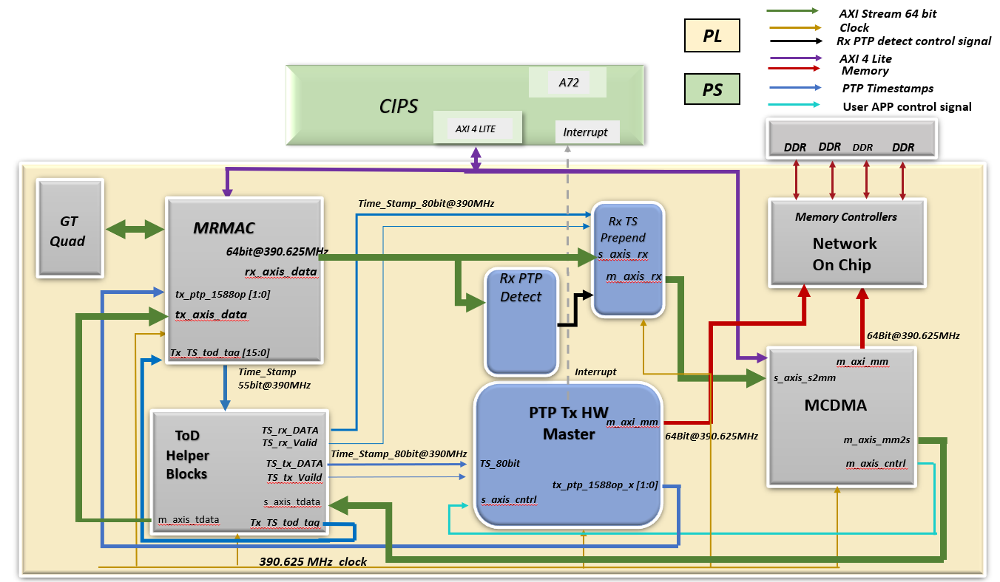

Versal Prime -VCK190 Evaluation Kit
|
Hardware Architecture of the PTP Packet Processor |
Hardware Acchitecture of the PTP Packet Processor¶
PTP Tx HW MASTER IP¶
The PTP HW Master receives the necessary information from the USER-APP fields of the AXI MCDMA for capturing timestamp and storing it in memory for the Transmitted PTP packets. The address of the memory where the timestamp needs to be stored is provided by the USER-APP fields of AXI MCDMA Control stream. The SW provides a 2-bit PTP flag. Based on the value of the Flag bits, the PTP HW Master drives the tx_ptp_1588op_in [1:0] interface of MRMAC. MRMAC performs the PTP operation based on the 2 bit value of tx_ptp_1588op_in[1:0] as given in below table:
| tx_ptp_1588op_in [1:0] | Operation |
|---|---|
| 2’b00 | No operation: no timestamp is taken, and the frame is not modified. |
| 2’b01 | 1-step: a timestamp should be taken and inserted into the frame. |
| 2’b10 | 2-step: a timestamp should be taken and returned to the client using the additional ports of 2-step operation. The frame itself is not modified. |
| 2’b11 | Reserved |

The PTP HW Master supports both 1-step and 2-step PTP modes.
2-step Mode:
When the ptp flag value is “10”, the PTP HW Master initiates a memory write operation of the timestamp value. The timestamp value is written into the memory via NoC. The PTP HW Master makes the final bit 1 (qualifier bit) to indicate the memory write completion to Software. The command received from the MCDMA control stream is transmitted to the one step helper block. The one step helper block does not perform any processing on the incoming data packets. It transmits the received packets to the MRMAC without any modifications.
1-step E2E Mode:
• Sync Packet
i. The Tx PTP HW Master receives the command from MCDMA control stream. This command is sent to the one step helper block. Based on the command, the one step helper block detects the Sync Packet.
ii. In this mode, the one step helper block inserts timestamp on the fly. It appends the timestamp to the incoming data sends the updated data to the MRMAC.
iii.Also, the one step helper block drives the m_ptp_tag and tx_ptp_upd_chksum_in input of the MRMAC IP which indicates whether a checksum recalculation is required to be done by the MRMAC or not. The location of the checksum is ascertained as described in the tx_ptp_cf_offset field, which is also driven by the one step helper block.
• Delay request packet- The mode of operation is same as a 2-step PTP operation.
• Delay response packet- No operation required by any of the PTP Packet Processors.
1-step P2P Mode:
• Sync Packet
i. The mode of operation is same as a 1-step E2E Sync operation
• PDelay response packet
i. The Tx PTP HW Master receives the command from MCDMA control stream. This command is sent to the one step helper block. Based on the command, the one step helper block detects the PDelay Response Packet.
ii. The t2 timestamp information received is extracted by the Rx PDTP and written into a FIFO. The Tx HW Master reads the t2 data from the FIFO and sends it to the one step helper block along with the command.
iii.The one step helper block inserts timestamp on the fly. It appends the timestamp to the incoming data sends the updated data to the MRMAC.
iv. Also, the one step helper block drives the m_ptp_tag and tx_ptp_upd_chksum_in input of the MRMAC IP which indicates whether a checksum recalculation is required to be done by the MRMAC or not. The location of the checksum is ascertained as described in the tx_ptp_cf_offset field, which is also driven by the one step helper block. *
• PDelay request packet- The mode of operation is same as a 2-step PTP operation.
• For more details on the checksum and correction factor port description and operation, please refer to PG314- Versal Devices Integrated 100G Multirate Ethernet MAC Subsystem v1.3 ( PG314 )
Rx PTP PACKET DETECT LOGIC IP¶
PTP Packet Detection IP parses all the received Packets.
o When a PTP packet is received, it parses the Header and sets a PTP Qualifier bit (i) when a PTP packet is detected, that helps the PTP application in upper layer for further processing.
o An additional Qualifier bit is set, when a Peer-to-Peer PTP packet(ii) is detected.
o Timestamp prepend logic prepends two 64 bit Datawords (128 bit) to all the received packets, which has 80 bit Timestamp information and the status of the Qualifier bits. Below table has the details of prepended datawords.
| Status words | Content |
|---|---|
| Prepended DW-0 | 63 : 0 - Timestamp[63:0] |
| Prepended DW-1 | 15 : 0 - Timestamp[79:64] 29 : 16 - Reserved 30 - Peer-to-Peer PTP Packet Qualifier bit 31 - PTP Packet Qualifier bit 63 : 32 - Reserved |
| DW-2 | Received Packet data stream starts |
Supported Features:
o PTP Packet over IEEEE 802.3
o PTP Packet over UDP IPV4 – Version 1 and Version 2
o Two step PTP
o One step PTP
The PTP detect logic checks the Type field of the received packet whenever a new ethernet packet is received and also checks for the multicast IP destination address for UDP IPV4 Packets, to carry out the PTP detection.
(i) PTP Packet Qualifier bit - DW1[31]
(ii) Peer-to-Peer PTP Packet Qualifier bit - DW1[30]
Next Steps
Go to the SW Architecture Platform page
Go back to the VCK190 Ethernet TRD design start page
License
Licensed under the Apache License, Version 2.0 (the “License”); you may not use this file except in compliance with the License.
You may obtain a copy of the License at http://www.apache.org/licenses/LICENSE-2.0
Unless required by applicable law or agreed to in writing, software distributed under the License is distributed on an “AS IS” BASIS, WITHOUT WARRANTIES OR CONDITIONS OF ANY KIND, either express or implied. See the License for the specific language governing permissions and limitations under the License.
Copyright © 2023 Advanced Micro Devices, Inc